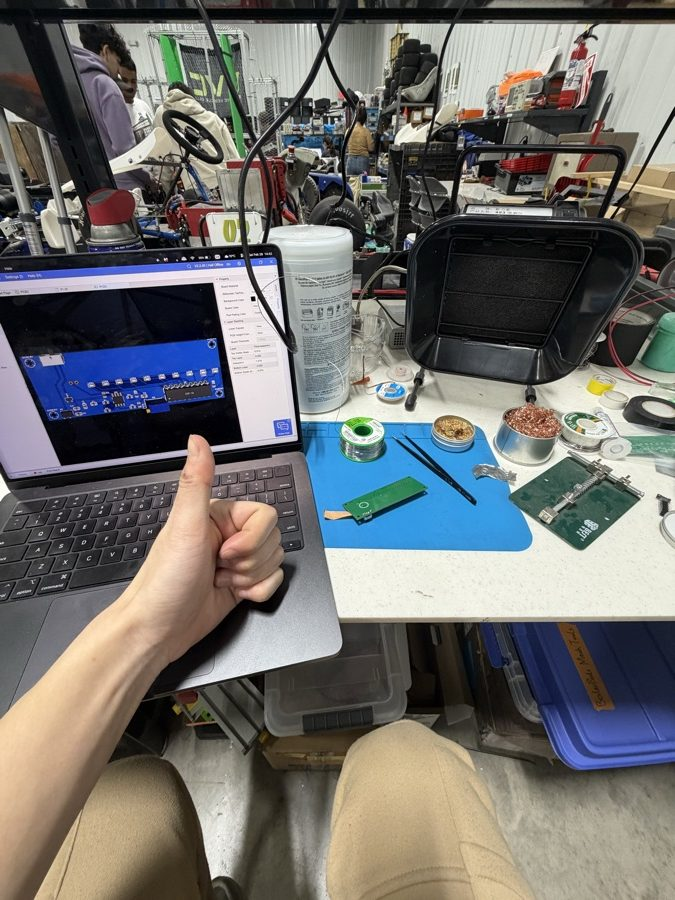
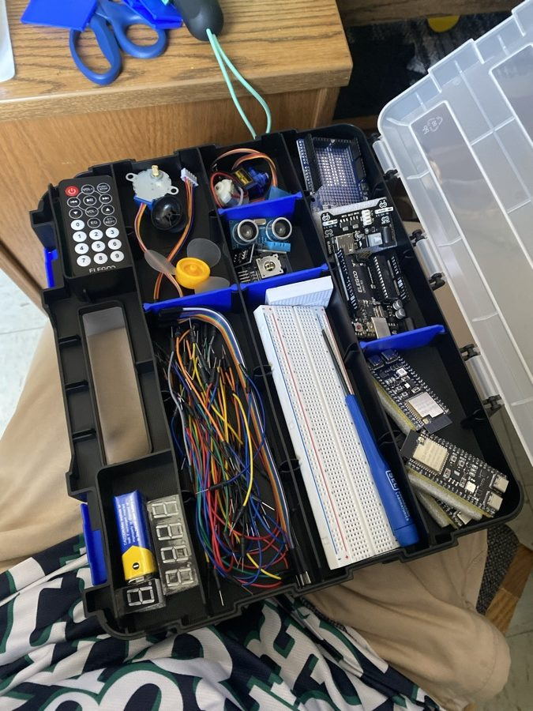
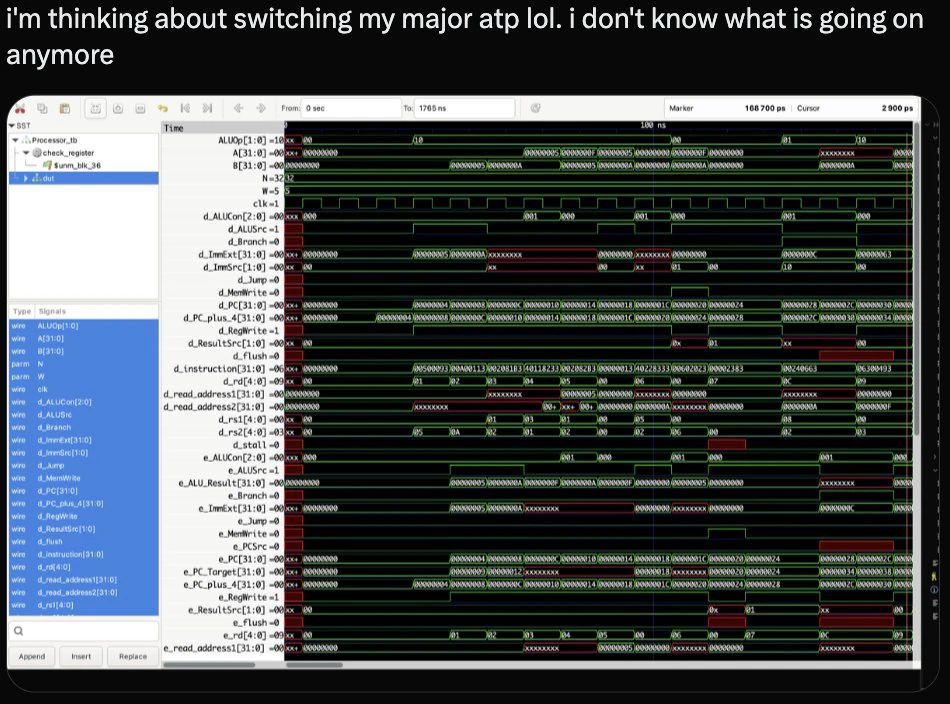
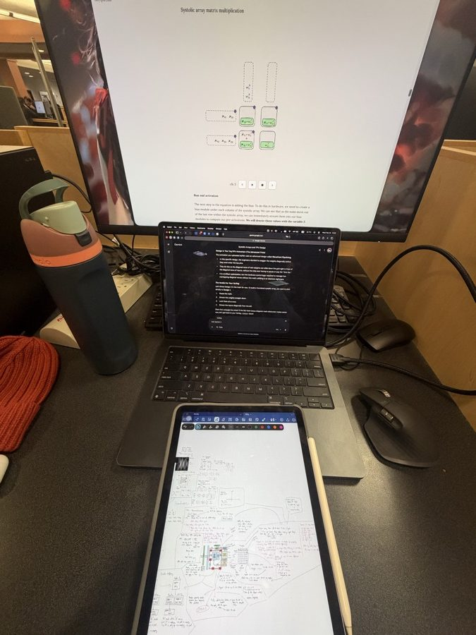
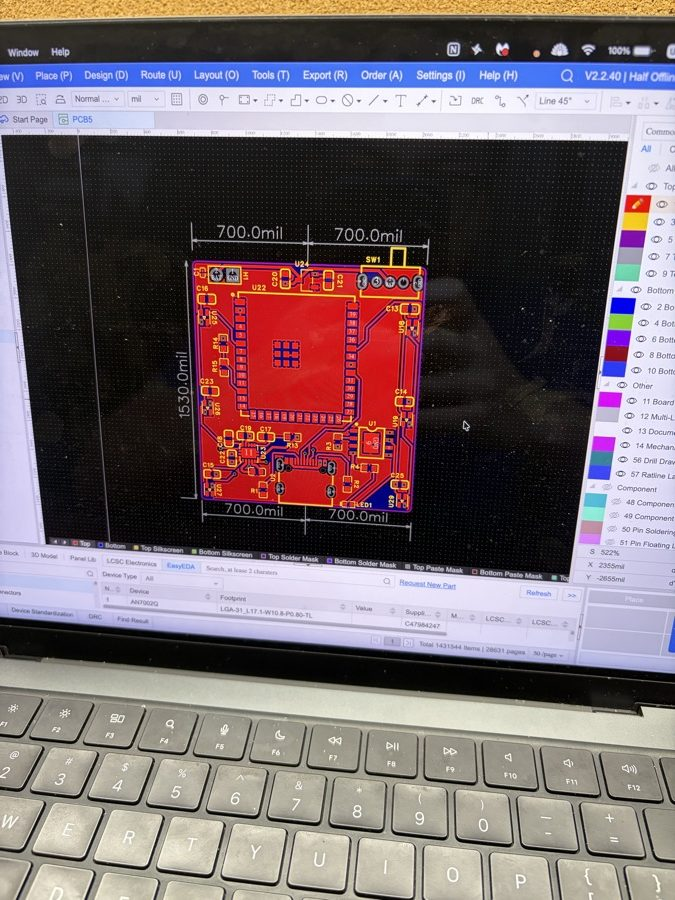
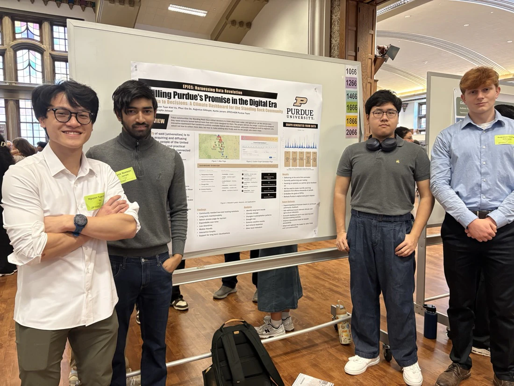
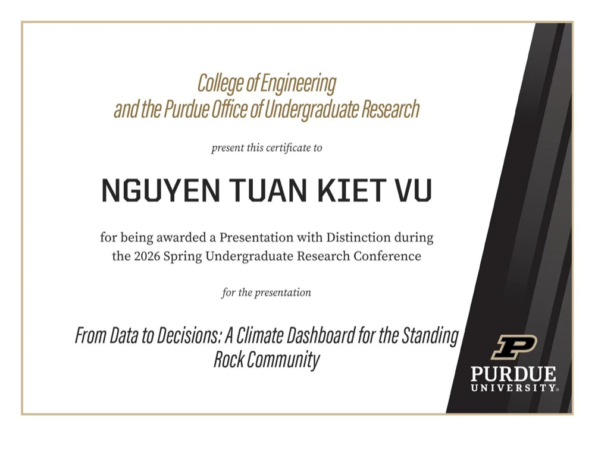
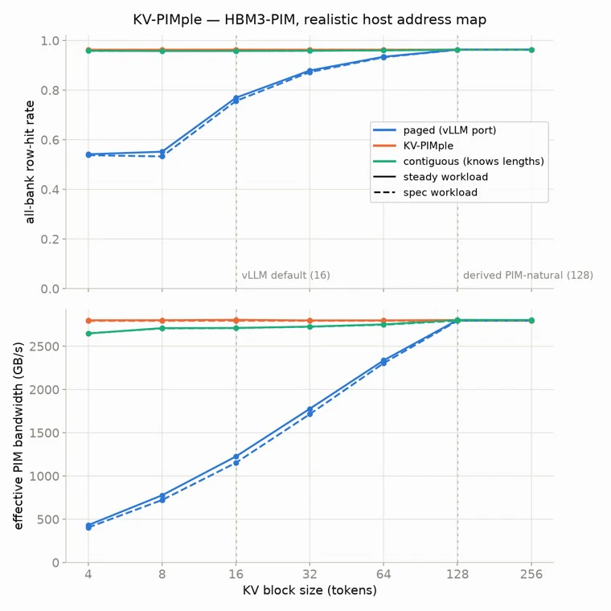

My first semester in the US. I tried a bit of everything: PCB design with RoboMaster, data pipelines with EPICS, and some RFIC and analog through IEEE MTT-S.
“Chip design” was still just something people said a lot. I legit thought it was something like an AI bubble.

RoboMaster lab. Thumbs up, zero clue.
Fall 2025
Bought an Arduino and ESP32 starter kit to actually learn EE. Decided not for me. I threw away $50 just like that.
Should have bought the clones from China.

Day one of “how hard can EE be?”
Fall 2025
Friends told me Purdue has a chip design team. I noted it and moved on. I still didn’t know what I wanted, and I had other priorities anyway: building study habits, making friends, joining clubs, staying out way past midnight, and living the uni life Instagram sold me before I got here. Mostly accomplished.
At that time, my idea of EE was just “a cool major where you build cool electronics.” That’s why I bought some keyboard switches, motors, trying to design my own PCBs after watching cool stuffs on Youtube (custom keyboards, smart knob, computer vision stuffs,..) but never ended up using them.
Took it through LibreLane to a signed-off Sky130 layout. My first chip.
Spring 2026
Started posting progress on X: waveforms, hand-drawn cache diagrams, and the occasional crisis about my major.

Posting on X.
Spring 2026
Went down the accelerator rabbit hole: Google’s TPU and how systolic arrays do matrix math.

Three screens, one systolic array.
Spring 2026
I remembered the chip design team my friends told me about last semester. After doing some research, I saw that SoCET has a GPU team, but it doubles as senior design, so you basically need junior standing to get in. I was a freshman with just one tutorial CPU.
I ended up emailing two or three people on different teams, cause, you know how the saying goes: You miss one hundred percent of the shots you don't take.
I then got invited to the office hours of someone on the GPU team and asked in person. He referred me. I got invited to a team meeting, then an interview with the future team leads. I lost real sleep over it, refreshing my inbox and replaying my answers at 2 a.m.
They said yes.
Spring 2026
RTL had most of my attention by now, but I still lay out PCBs at night for fun.

PCBs, now just a hobby.
Spring 2026
Presented our EPICS climate dashboard at Purdue’s Undergraduate Research Conference, my first research conference. We got a Presentation with Distinction.


Summer 2026
Summer 2026
No internship, so I made my own plan: enjoy the break, and come back in the fall ready for the GPU team. I went to Japan, then traveled around Vietnam, and worked on projects between trips.
Application season. During the day I work on the Ethernet RX datapath for the SoCET GPU team. At night I read about new technologies: network topologies, data centers, the semiconductor supply chain, memory systems, scale-up and scale-out. I also read a lot about GPU and CPU microarchitecture and other people’s reverse-engineering work.
In between, I apply for internships. Lots of applications, lots of resume edits, and so far mostly rejections and silence.
Sep 2026
Entered the hackathon at Purdue’s Workshop on Chips and AI. Picked KV-cache compression and attention inside PIM, which I had absolutely no idea about. I then went through every resource on PIM I could find, learned machine learning in two days with 3Blue1Brown’s neural networks series, then spent a week co-designing KV-PIMple while reading papers on the topic.
It didn’t make the finalists. Still, I learned a lot about PIM and AI, and having a deadline made me learn much faster than I would have otherwise. It also gives me real things to talk about when I meet with professors.

KV-PIMple: row-hit rate and PIM bandwidth vs. KV block size.